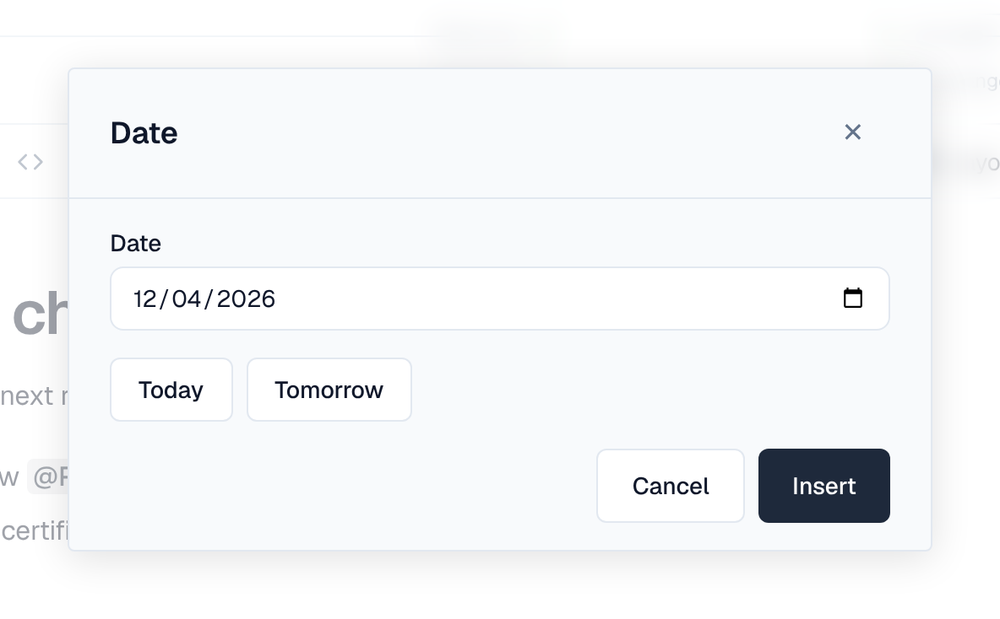
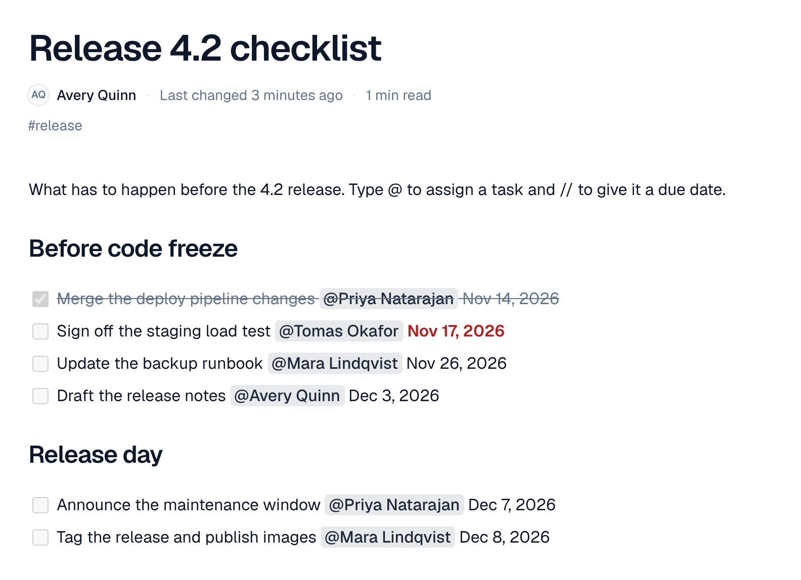
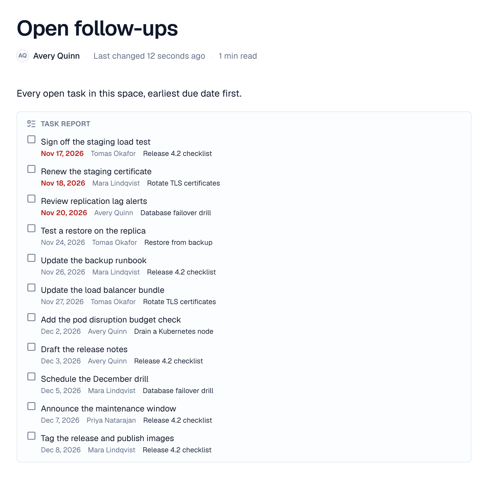

1. Overview
Every item of a Checklist is a task. A task can name who does it and when it is due, and a Task report block lists tasks from many pages: the open tasks of a project, or each reader's own.
2. Dates
A date is a day written as a small chip that every reader sees in their own language and date format. Insert one with /date, Insert → Date, or by typing // at the start of a line or after a space. Pick a day, or Today or Tomorrow; select a date later to change it.

Dates can be from 1900 to 2200. In a page downloaded as Word or PDF, a date is written in the language of the person downloading it.
3. Assign a task and give it a due date
In a checklist item, type @ and pick a person to assign the task, and // to give it a due date. An empty checklist item hints at both: Type @ to assign the task, // for a due date.

- The first person mentioned in a task is its assignee, and its first date its due date. Other mentions and dates are part of its text.
- An open task whose date has passed shows its date in the overdue colour, and due today on the day. Done tasks show their dates as they are.
- A mentioned person gets the usual mention alert; there is no separate alert for being assigned.
- Tasks of a page count once the page is published: a task report lists the tasks of each page's latest published version.
4. Task report
/tasks (or /task report) inserts a Task report, which lists tasks from the published pages you choose: each task's text, its due date, its assignee and its page. Open a task's page to tick it.

| Setting | Choices |
|---|---|
| From | This space, Every space the reader can read, or These spaces (up to 5 space keys) |
| Label (optional) | Only tasks on pages with this label |
| Assigned to | Anyone, The person reading (each reader sees their own tasks), or Someone in particular (find them by name) |
| Tasks | Open (the default) or Done |
| Sort by | By due date (tasks without a date last) or By page |
| How many | 10, 20 (the default) or 40 |
- A report lists tasks of pages only, not of blog posts, and only pages the reader may read (not locked pages they aren't on, drafts or trashed pages).
- Names of assignees show only to readers who may see people in the space. To others, a report of Someone in particular isn't shown at all.
- Visitors who aren't signed in see Sign in to see the tasks assigned to you in a report of The person reading.
- Tasks can't be ticked from the report yet.
- A report shares the limit of six lists a page with Pages by label and Blog posts.
In a page downloaded as Word or PDF, a report prints as lines (☐ or ☑, the task linked to its page, due date, assignee, page). Confluence Action items keep their assignee and due date when imported, and a Task report macro becomes a task report.
When someone's personal data is erased, their tasks lose their assignee in reports. Their personal data export lists the tasks assigned to them.